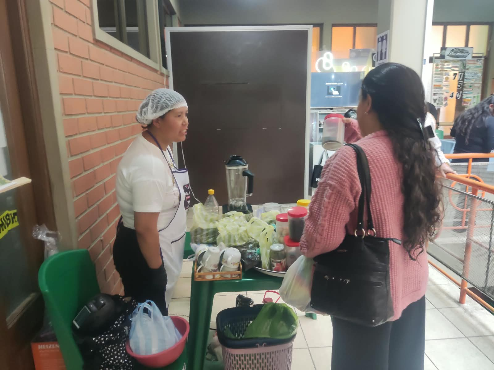
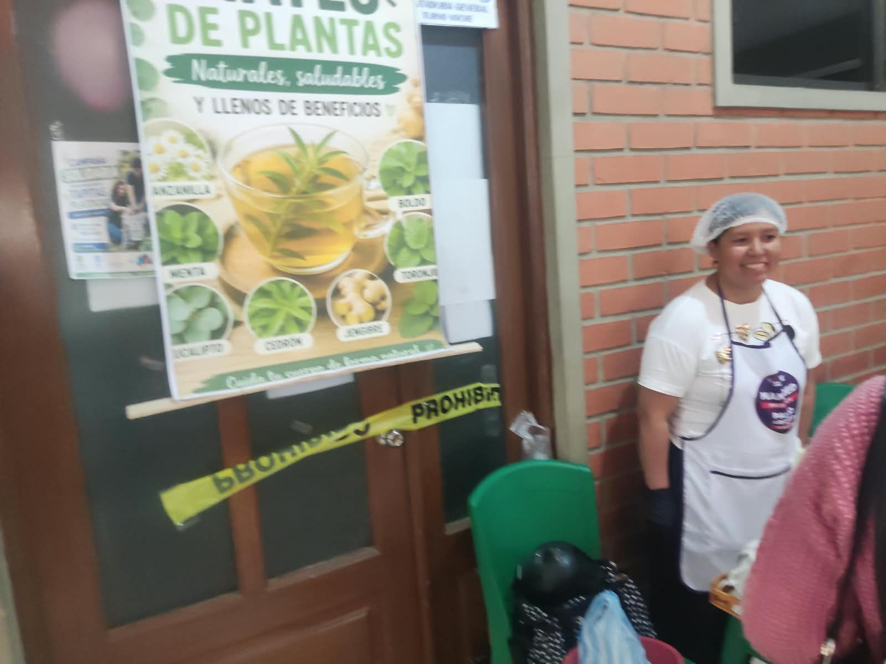
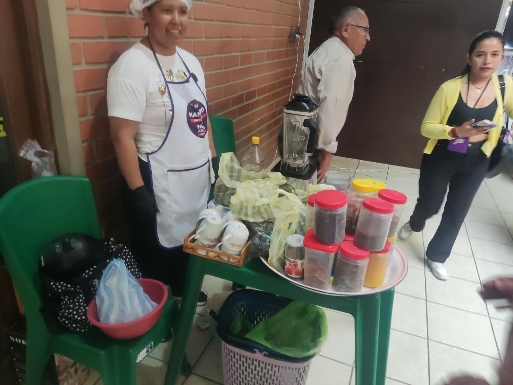

Descripción del Negocio
Esencia del Bosque se dedica a la comercialización de tés e infusiones orgánicas y naturales, seleccionados cuidadosamente por sus propiedades beneficiosas y sus deliciosos sabores. Ofrecemos una experiencia sensorial que conecta al consumidor con los beneficios de la naturaleza, promoviendo un estilo de vida saludable y consciente.



Requisitos para Emprender en Té Natural
- Conocimiento de Productos: Entender las propiedades, orígenes y beneficios de diferentes tipos de té e infusiones.
- Proveedores Orgánicos/Naturales: Establecer acuerdos con agricultores o distribuidores confiables que ofrezcan productos de alta calidad y certificación orgánica si es posible.
- Capital Inicial: Para stock inicial, posible local, empaque, marketing y permisos. Estimado entre 4.000€ - 12.000€.
- Registro Sanitario/Alimentario: Cumplir con las normativas para la manipulación y venta de alimentos.
- Diseño de Empaque: Atractivo, funcional y que resalte la naturalidad del producto.
- Canales de Venta: Tienda online, tienda física, mercados artesanales, colaboraciones con tiendas de productos naturales/saludables.
- Marketing: Enfocado en beneficios para la salud, origen natural, experiencias.
¿Con Cuánto se Empieza?
Un modelo de negocio centrado en la venta online y el uso de un espacio pequeño para empaque puede arrancar con 2.000€ - 5.000€ (stock, empaque, web, marketing). Si se considera una tienda física pequeña, la inversión podría escalar a 8.000€ - 15.000€.
Plan Económico Básico
Costos Iniciales Estimados:
- Stock Inicial de Tés e Infusiones: 30% - 50% del capital.
- Material de Empaque (bolsas, etiquetas, cajas): 500€ - 2.000€.
- Diseño Web / Tienda Online: 500€ - 1.500€.
- Permisos y Registros Sanitarios: 200€ - 600€.
- Marketing y Publicidad Inicial: 300€ - 1.000€.
- Equipamiento Básico (balanzas, utensilios): 200€ - 500€.
- Alquiler (si aplica): Variable.
Costos Operativos Mensuales Estimados:
- Reposición de Stock: Según volumen de ventas.
- Costos de Empaque: Variable.
- Marketing Continuo: 100€ - 500€.
- Gastos de Envío y Logística: Variable.
- Alquiler y Servicios (si aplica): Variable.
Proyecciones de Ingresos:
Basadas en el precio por unidad/gramo, la rotación del stock y los canales de venta. Las ofertas por volumen o packs pueden aumentar los ingresos.
Diseño del Local/Negocio
Concepto: Natural, rústico y acogedor. Inspirado en la naturaleza, con materiales como madera, lino, cerámica. Colores tierra, verdes y blancos.
Distribución (si es tienda física):
- Zona de Exhibición: Estanterías con los tés presentados de forma atractiva, quizás con exhibidores a granel (si es higiénico y permitido). Información clara sobre cada tipo de té.
- Mostrador: Funcional, con espacio para balanza, empaque y quizás para degustación.
- Zona de Preparación (opcional): Si se ofrecen tés para consumir en el local, un área discreta y funcional para preparar las bebidas.
- Almacén: Bien organizado, fresco y seco para conservar la calidad de los tés.
Iluminación: Luz cálida y natural. Evitar luz directa sobre los tés para no degradar sus propiedades.
Decoración: Elementos naturales: plantas, ramas, cestas de mimbre. Mostrar la materia prima si es posible (flores secas, hierbas). Ambiente tranquilo.